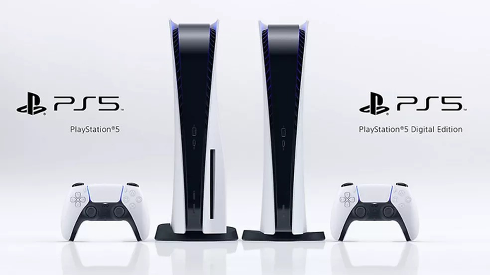

Mais recursos do PS5™
Veja em mais detalhes a interface de usuário do console PS5 e descubra por que adquirir este produto.
Hub de jogos
Os jogos contam com hubs no PS5. O hub de cada jogo reúne tudo relacionado ao jogo, incluindo atividades, transmissões da comunidade e novo conteúdo do jogo.
Centro de controle
Acesse rapidamente os recursos do sistema usados com frequência, o conteúdo do jogo e as atividades sem sair do jogo. Basta pressionar o botão PS enquanto joga para ver o menu sobreposto do Centro de controle.